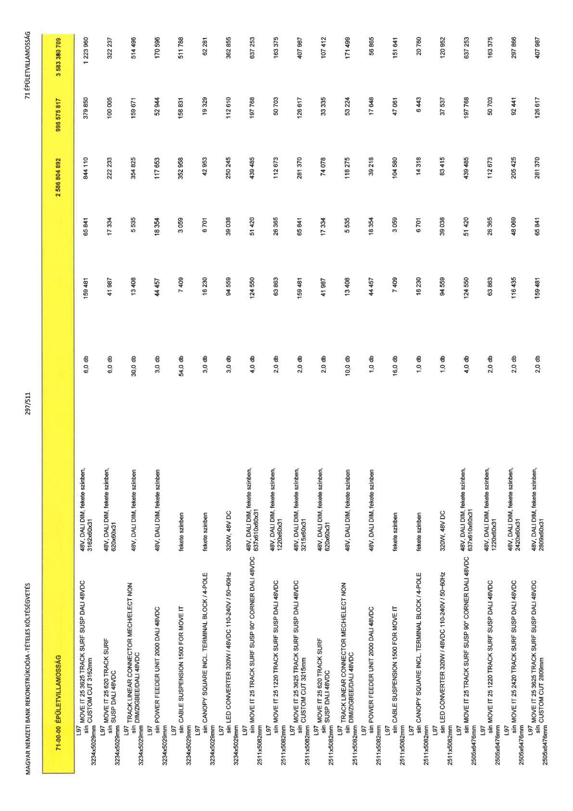

| Tétel | Menny. | Egys. | Anyag e.ár (net HUF) | Díj e.ár (net HUF) | Anyag összesen (net HUF) | Díj összesen (net HUF) | Anyag+Díj összesen (net HUF) |
|---|---|---|---|---|---|---|---|
| 71-00-00 ÉPÜLETVILLAMOSSÁG | NaN | NaN | 0 | 0 | 2 586 804 892 | 996 575 817 | 3 583 380 709 |
| 48V, DALI DIM, fekete színben, 3162x60x31 | 0 | 0 | 0 | 0 | 0 | 0 | 0 |
| L97 sín MOVE IT 25 3625 TRACK SURF SUSP DALI 48VDC CUSTOM CUT 3162mm 3234x5029mm | 6,0 | db | 159 481 | 65 841 | 844 110 | 379 850 | 1 223 960 |
| 48V, DALI DIM, fekete színben, 620x60x31 | 0 | 0 | 0 | 0 | 0 | 0 | 0 |
| L97 sín MOVE IT 25 620 TRACK SURF SUSP DALI 48VDC 3234x5029mm | 6,0 | db | 41 987 | 17 334 | 222 233 | 100 005 | 322 237 |
| 48V, DALI DIM, fekete színben | 0 | 0 | 0 | 0 | 0 | 0 | 0 |
| L97 sín TRACK LINEAR CONNECTOR MECH/ELECT NON DIM/ZIGBEE/DALI 48VDC 3234x5029mm | 30,0 | db | 13 408 | 5 535 | 354 825 | 159 671 | 514 496 |
| 48V, DALI DIM, fekete színben | 0 | 0 | 0 | 0 | 0 | 0 | 0 |
| L97 sín POWER FEEDER UNIT 2000 DALI 48VDC 3234x5029mm | 3,0 | db | 44 457 | 18 354 | 117 653 | 52 944 | 170 596 |
| fekete színben | 0 | 0 | 0 | 0 | 0 | 0 | 0 |
| L97 sín CABLE SUSPENSION 1500 FOR MOVE IT 3234x5029mm | 54,0 | db | 7 409 | 3 059 | 352 958 | 158 831 | 511 788 |
| fekete színben | 0 | 0 | 0 | 0 | 0 | 0 | 0 |
| L97 sín CANOPY SQUARE INCL TERMINAL BLOCK / 4-POLE 3234x5029mm | 3,0 | db | 16 230 | 6 701 | 42 953 | 19 329 | 62 281 |
| 320W, 48V DC | 0 | 0 | 0 | 0 | 0 | 0 | 0 |
| L97 sín LED CONVERTER 320W / 48VDC 110-240V / 50-60Hz 3234x5029mm | 3,0 | db | 94 559 | 39 038 | 250 245 | 112 610 | 362 855 |
| 48V, DALI DIM, fekete színben, 637x610x60x31 | 0 | 0 | 0 | 0 | 0 | 0 | 0 |
| L97 sín MOVE IT 25 TRACK SURF SUSP 90° CORNER DALI 48VDC 2511x5082mm | 4,0 | db | 124 550 | 51 420 | 439 485 | 197 768 | 637 253 |
| 48V, DALI DIM, fekete színben, 1220x60x31 | 0 | 0 | 0 | 0 | 0 | 0 | 0 |
| L97 sín MOVE IT 25 1220 TRACK SURF SUSP DALI 48VDC 2511x5082mm | 2,0 | db | 63 863 | 26 365 | 112 673 | 50 703 | 163 375 |
| 48V, DALI DIM, fekete színben, 3215x60x31 | 0 | 0 | 0 | 0 | 0 | 0 | 0 |
| L97 sín MOVE IT 25 3625 TRACK SURF SUSP DALI 48VDC CUSTOM CUT 3215mm 2511x5082mm | 2,0 | db | 159 481 | 65 841 | 281 370 | 126 617 | 407 987 |
| 48V, DALI DIM, fekete színben, 620x60x31 | 0 | 0 | 0 | 0 | 0 | 0 | 0 |
| L97 sín MOVE IT 25 620 TRACK SURF SUSP DALI 48VDC 2511x5082mm | 2,0 | db | 41 987 | 17 334 | 74 078 | 33 335 | 107 412 |
| 48V, DALI DIM, fekete színben | 0 | 0 | 0 | 0 | 0 | 0 | 0 |
| L97 sín TRACK LINEAR CONNECTOR MECH/ELECT NON DIM/ZIGBEE/DALI 48VDC 2511x5082mm | 10,0 | db | 13 408 | 5 535 | 118 275 | 53 224 | 171 499 |
| 48V, DALI DIM, fekete színben | 0 | 0 | 0 | 0 | 0 | 0 | 0 |
| L97 sín POWER FEEDER UNIT 2000 DALI 48VDC 2511x5082mm | 1,0 | db | 44 457 | 18 354 | 39 218 | 17 648 | 56 865 |
| fekete színben | 0 | 0 | 0 | 0 | 0 | 0 | 0 |
| L97 sín CABLE SUSPENSION 1500 FOR MOVE IT 2511x5082mm | 16,0 | db | 7 409 | 3 059 | 104 580 | 47 061 | 151 641 |
| fekete színben | 0 | 0 | 0 | 0 | 0 | 0 | 0 |
| L97 sín CANOPY SQUARE INCL TERMINAL BLOCK / 4-POLE 2511x5082mm | 1,0 | db | 16 230 | 6 701 | 14 318 | 6 443 | 20 760 |
| 320W, 48V DC | 0 | 0 | 0 | 0 | 0 | 0 | 0 |
| L97 sín LED CONVERTER 320W / 48VDC 110-240V / 50-60Hz 2511x5082mm | 1,0 | db | 94 559 | 39 038 | 83 415 | 37 537 | 120 952 |
| 48V, DALI DIM, fekete színben, 637x610x60x31 | 0 | 0 | 0 | 0 | 0 | 0 | 0 |
| L97 sín MOVE IT 25 TRACK SURF SUSP 90° CORNER DALI 48VDC 2505x6476mm | 4,0 | db | 124 550 | 51 420 | 439 485 | 197 768 | 637 253 |
| 48V, DALI DIM, fekete színben, 1220x60x31 | 0 | 0 | 0 | 0 | 0 | 0 | 0 |
| L97 sín MOVE IT 25 1220 TRACK SURF SUSP DALI 48VDC 2505x6476mm | 2,0 | db | 63 863 | 26 365 | 112 673 | 50 703 | 163 375 |
| 48V, DALI DIM, fekete színben, 2420x60x31 | 0 | 0 | 0 | 0 | 0 | 0 | 0 |
| L97 sín MOVE IT 25 2420 TRACK SURF SUSP DALI 48VDC 2505x6476mm | 2,0 | db | 116 435 | 48 069 | 205 425 | 92 441 | 297 866 |
| 48V, DALI DIM, fekete színben, 2809x60x31 | 0 | 0 | 0 | 0 | 0 | 0 | 0 |
| L97 sín MOVE IT 25 3625 TRACK SURF SUSP DALI 48VDC CUSTOM CUT 2809mm 2505x6476mm | 2,0 | db | 159 481 | 65 841 | 281 370 | 126 617 | 407 987 |
